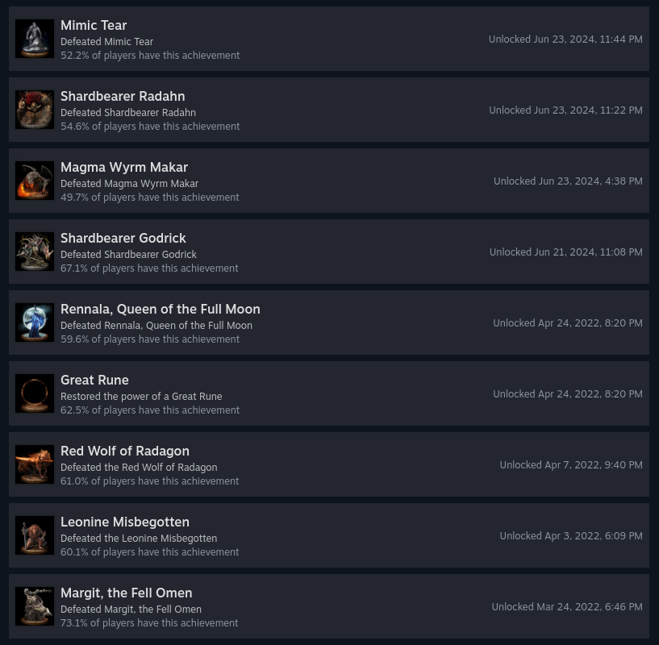

I didn't *get* elden ring in the earlier days. I'd not really played a soulslike before for more than a few minutes (I played just enough to get trampled by the bosses i now know are *supposed* to trample you at the start as a tradition, but not enough to really get what the point of it all was)
With a bunch of friends being back into it again due to the new expansion being released, I thought I'd give it another go. Interest renewed. I want to understand it.
I started a new save, rushed through a few starting objectives a youtube video suggested (collecting some runes and other assorted items like a couple bits for the wonderous physick) and then went back to margit to roll him over.
I struggled and decided to go farm some runes. Mates suggested a spot in Caelid where you can get the jump on the enemies with sneak and pretty much insta kill them for 1k runes a pop. Did a few of those and invested in my strength a bit.
Got Margit and decided to move on to Godric who i'd never tried before.
Couldn't do it.
Got annoyed, waited a week, loaded my -other- save from nearer release where i'd somehow managed to break Rennala but never ran across Godric.
Pushed to Godric, for revenge. Killed him in one try. That character is a bleedy claw dex guy. Works nicely indeed!
So I got a bit hooked, and this weekend have now steamrolled over Makar, Radahn, Mimic Tear, a couple of volcano manor tasks, and oh my god I get it now. This game is gorgeous. It's huge. There's so much going on. The lore, while sparse, does actually exist. I'm beginning to understand why they love it as much as they do.

Can I take today off and play it please? I'm sick but not the sort of person to throw a sickie.
-eggg, patiently waiting
-2024-06-24